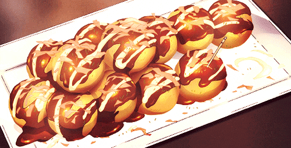

Home

Total time: 20 mins
Prep: 10 mins
Cook: 10 mins
Yield: 30 balls
Takoyaki is a ball-shaped Japanese snack made of a wheat flour
batter and cooked in a specially molded pan. The typical fillings
are minced or diced octopus, tempura scraps, pickled ginger, and green onion.
A takoyaki plate + a takoyaki pick or chopstick.
For the Batter:
- 450 ml dashi stock
- 140 g plain flour
- 10 g cornflour or cornstarch
- 1 tbsp milk
- 1 egg
- 100-140 g octopus pieces chopped into 2cm pieces (or substitute with chicken, ham, bacon or cheese)
- 1/2 cup spring onion chopped
- 1/4 pickled ginger chopped
- 1/2 cup tenkasu crispy tempura crumbs
For the Topping:
- Use BBQ Sauce(or takoyaki/ okonomiyaki sauce)
- Slice the octopus (or other protein) into bite-size pieces and put aside.
- Combine the plain flour and cornflour in a bowl, then in a separate bowl whisk the egg. Add the egg to the dry mixture, then slowly pour in the dashi stock or water and whisk it all together.
- Heat the takoyaki pan over medium-high heat and coat it with oil. Pour the prepared batter into the center of the pan and keep it up until all the wells are full and the batter covers entire plate.
- Place one piece of the protein into each, then scatter the spring onion, ginger, and tempura crumbs. When the bottom of the batter starts turning crispy, use a chopstick to cut out a square shape around each takoyaki well.
- Continue flipping each ball occasionally as the batter becomes crispy and golden brown on all sides. Do this by piercing the ball and pulling it upwards to flip.
- Put the cooked takoyaki onto plates and top them with your preferred topping.
- Classic style topping -> BBQ sauce (or takoyaki/ okonomiyaki sauce) in a zigzag pattern. Dust with aonori powder and bonito flakes.
(Source of the recipe: Wanders Cooks)